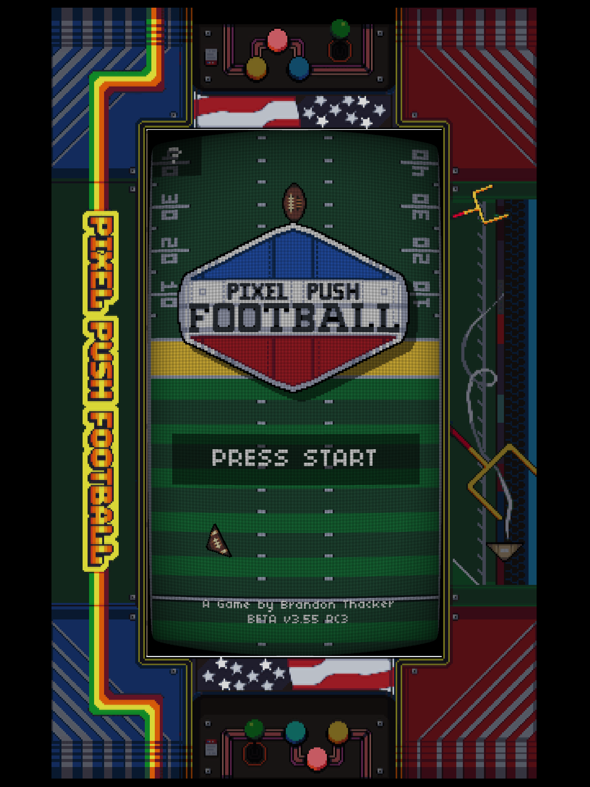
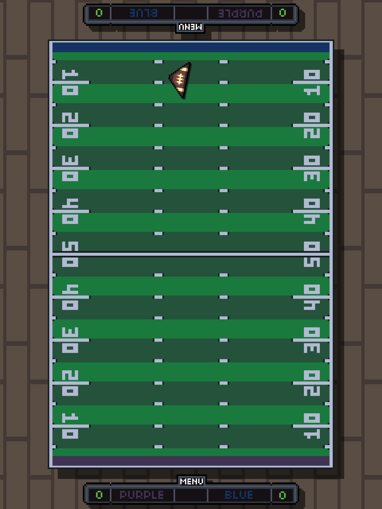

> cat about_me.json
guest@bthacker.github.io:~$
> ls /projects
Air Hockey | NES (2025)
A "black box" NES game built for the original console and playable on real hardware or through emulation.
[download @ itch.io] | [source_code]

Pixel Push Football | iOS, Infinity (2020)
A mobile game I created with the Godot game engine based on the rules of paper football. Featured on iOS and also the Infinity Game Table by Arcade1Up.
 > cat resume.txt
[linkedin]
[github]
[email]
[discord]
__EXPERIENCE__
2022 - present | Software Engineering Technical Leader @ Cisco Systems
- > Technical leader focused on development of the XDR Analytics platform.
- > Python, Terraform, AWS, Azure.
2018 - 2022 | Principal Site Reliability / DevOps Engineer @ SAGE
- > Lead major cost savings initiatives.
- > Signifiant AWS, Azure exposure and experience.
2020 | Self Developed "Pixel Push Football"
- > Programmed in Godot using GDScript.
- > Outsourced music, sound effects, pixel art.
2015-2018 | Senior Systems Admin / Engineer @ Purchasing Power
- > Windows, Linux, NetApp, VMWare and other systems administration / engineering.